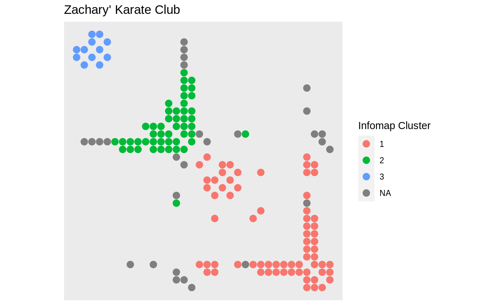

This geom draws edges as glyphs with their x-position defined by the
x-position of the start node, and the y-position defined by the y-position of
the end node. As such it will result in a matrix layout when used in
conjunction with layout_tbl_graph_matrix()
geom_edge_point(mapping = NULL, data = get_edges(), position = "identity", mirror = FALSE, show.legend = NA, ...)
| mapping | Set of aesthetic mappings created by |
|---|---|
| data | The return of a call to |
| position | Position adjustment, either as a string, or the result of a call to a position adjustment function. |
| mirror | Logical. Should edge points be duplicated on both sides of the
diagonal. Intended for undirected graphs. Default to |
| show.legend | logical. Should this layer be included in the legends?
|
| ... | Other arguments passed on to |
geom_edge_point understands the following
aesthetics. Bold aesthetics are automatically set, but can be overridden.
x
y
edge_shape
edge_colour
edge_size
edge_alpha
filter
In order to avoid excessive typing edge aesthetic names are
automatically expanded. Because of this it is not necessary to write
edge_colour within the aes() call as colour will
automatically be renamed appropriately.
Other geom_edge_*: geom_edge_arc,
geom_edge_bend,
geom_edge_density,
geom_edge_diagonal,
geom_edge_elbow,
geom_edge_fan,
geom_edge_hive,
geom_edge_link,
geom_edge_loop,
geom_edge_span,
geom_edge_tile
require(tidygraph) gr <- create_notable('zachary') %>% mutate(group = group_infomap()) %>% morph(to_split, group) %>% activate(edges) %>% mutate(edge_group = as.character(.N()$group[1])) %>% unmorph()#>ggraph(gr, 'matrix', sort.by = node_rank_hclust()) + geom_edge_point(aes(colour = edge_group), mirror = TRUE, edge_size = 3) + scale_y_reverse() + coord_fixed() + labs(edge_colour = 'Infomap Cluster') + ggtitle("Zachary' Karate Club")